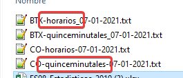

Los archivos deben estar nombrados con las palabras "quinceminutales" u
"horarios" para que el programa pueda distinguir los datos a tratar"
El nombre debe estar separado por guiones bajos o guiones medios

Los datos que hay dentro del archivo deben tener la primera columna que sea la fecha, la 2º columna
que
sea la hora, los datos separados por ";" y los decimales separados por ",". Recordar que para los
octohorarios necesitamos 1 día extra de datos para realizar los calculos.